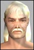

| Author | Thread |
Foster
Leetas
 Registered: Dec 2001
Posts: 35 | quote:
Did Dogda 1 ages ago - got the Shoulder pads and tokens - but no Card II - wasn't given out at the time.
Yes please, I'd like to know as well. |
Nargothronds
Leetas
 Registered: Mar 2002
Posts: 51 | Hello!
Maybe i can help out some of you that dont know whats going on with your Alvin/Dogda missions.
If you did get and do the mission BEFORE the 14,2 patch its was bugged and did not work as indented and you did it, Quoted by a GM, On your own risk.
So, anyone that did not get the Card of from Alvin/Dogda after the first mission or did get the Card2 (like me) will have to do the first mission again.
Remember that you did it "On your own risk" so dont even bother to try getting help from GMs. |
Nargothronds
Leetas
Registered: Mar 2002
Posts: 51 | Wait, heard ingame from a guildmate that GMs helped another guildmate of me.
Il be back with more info on that.
If they did........
Sorry, I cannot help you.
Sorry, I won`t help you.
Sorry. |
Kwerk
Soleet
 Registered: Feb 2002
Posts: 99 | To clarify I did the Dodga Mission 1 for the clan shoulderpads and got a card.
When I recently returned the card to Dodga instead of the second quest where you tag, I got the third where you have to kill the bots and assemble the parts. |
ladywolfff
SoleetRegistered: Jul 2002
Posts: 13 | bump |
xyberviri
Supa Leet
 Registered: Nov 2001
Posts: 211 | HvD(harry van dummy) spawns at nearly the same location that Bib(best in brass) spawns, i waited for bib after tagging Hvd and nothing happen'd when i tagged him
nothing at all, i did the quest again and the second time i didn't bother with bib and went strait to harry and it still worked.
Now about the Were to go and who is next:
You would have known where to go and when to go there if you used the Radio thingy to listen to there conversations, but that A-Hole campers keep killing the bot instantly leaving little time to listen in on what the bot says.
I do have a copy of what the each bot says but i cant find it nor do i really care to try and find it at the high level scum have destroyed this quest with there camping ways. |
TexRob
Soleet
 Registered: Jun 2002
Posts: 69 | Anyone know if you can do the part2 of quest at same time as 3rd part? IE you target and tag them before killing? Was trying to see if you could shortcut having to do part 2 again for the second pad again. |
imac2much
Leetas
 Registered: May 2002
Posts: 24 | You sure can Yugi
You don't need to have the 3rd mission while picking up IDs...just need it when you hand dodga the completed data rack. |
gonzorage
yep
 Registered: Dec 2001
Posts: 23 | question i finished the first part, got the pad and the 2nd quest from Alvin. Then I didnt have time to play really for over a week and mission is gone. Is there any way to get this back? Any info appreciated. |
TexRob
Soleet
Registered: Jun 2002
Posts: 69 | thanks imac2much. Thinking about it, I'll probably just do it afterwards, because I won't be able to get people to go in order, mob to mob. It will be more like I get a couple friends to help with one, or random people, until I get to TK.
Thanks though.
As for the poster asking about running out of time, you can try petitioning from what I hear, but personally I would just say if you only have to do part 1 again, you may as well. It only took me about 30-45 mins to get the parts, if that. |
Zamolcrat
Phear Leet
 Registered: Jul 2002
Posts: 75 | bump |
Blaik
Eleet
 Registered: Sep 2002
Posts: 10 | One more Question Can someone give me a definitive answer about whether or not you have to repeat Part I if you fail Part II?
I know this string alluded to this a little, but does anyone know for sure? Let's say you fail part 2 (run out of time, do things in wrong order, or there's a bug), do you have to repeat Part 1 in order to re-do Part II? Does Alvin hand you back the card you need to complete Part II?
Info is appreciated...
-Blaik |
Zamolcrat
Phear Leet
Registered: Jul 2002
Posts: 75 | /bump |
headsprain
LeetRegistered: Sep 2002
Posts: 6 | i wonder if i screwed up... I'm not sure what I did wrong but i got to galvino and listened to him but nothing happened. I thought I was supposed to get a new mission icon. I sort of cheated, just planted the bug on each of the robots and listened to a thing or two they said, then went off to the next one. Do you have to get every single hint from them? And if I messed up somewhere, can I just start over with the TK, or do I have to begin with the first dodga mission again?
Any help would be welcome. |
Xpie
Supa Leet
 Registered: Feb 2002
Posts: 229 | This isn't working for me.
Trash King
Trash King Lackey
Electro Unique <- he won't let himself get tagged. What's wrong? |
Orlando Gardino
LeetRegistered: Jan 2002
Posts: 6 | I also got the mission to disassemble the robots when I went for the second mission. From what I know this must be a bug of somekind and its actualy the third mission that has been given instead of the second. It may have something to do with when you did the first, I did first before the patch that introduced the others. Im afraid the only way around this is to redo mission one which doesnt take long if you pick the right spots. My fave place was danger dunes in Aegean for the scooplets. I restarted and got the correct second mission this time around. |
Xpie
Supa Leet
Registered: Feb 2002
Posts: 229 | I just petitioned, and a gm gave me alvins card 1
*grins* |
Xpie
Supa Leet
Registered: Feb 2002
Posts: 229 | I now have the pads of dedication.
Big thanks go out to Lordtritoch, Tobleronee, Orey, and the person who wrote this guide.
*runs off* |
Character Zero
Phear Leet
 Registered: Jul 2002
Posts: 164 |  argh! argh!I followed this guide to the letter and i can't get the quest to work! I try to use the trasmission bugs on the various bots and nothing happens. I tagged the TK no problem and got a new mission. I tagged the TKL and got a new mission. Since then -- nothing. I tried retagging the TKL and I got another new mission. Since then -- nothing. Again!
Anyone have any ideas?? I tried tagging electro a ton of times and got nothing. Is this just bugged or something? |
WildKard
Leet
Registered: Nov 2001
Posts: 11 | It's not bugged. You have to have the bot targeted still when you tag it. Then wait a bit. Friend of mine had same prob, and just after I had tagged one. We've tagged Electro and Nuts as of last night (10-18-02). |
All times are GMT.


 Anarchy Online Bulletin Board > Game-Play > The World of Rubi-Ka > Dodga/Alvin Quest II Guide - Tag you're it!
Anarchy Online Bulletin Board > Game-Play > The World of Rubi-Ka > Dodga/Alvin Quest II Guide - Tag you're it! Last Thread Next Thread
Last Thread Next Thread 
 June 20th, 2002 08:55
June 20th, 2002 08:55